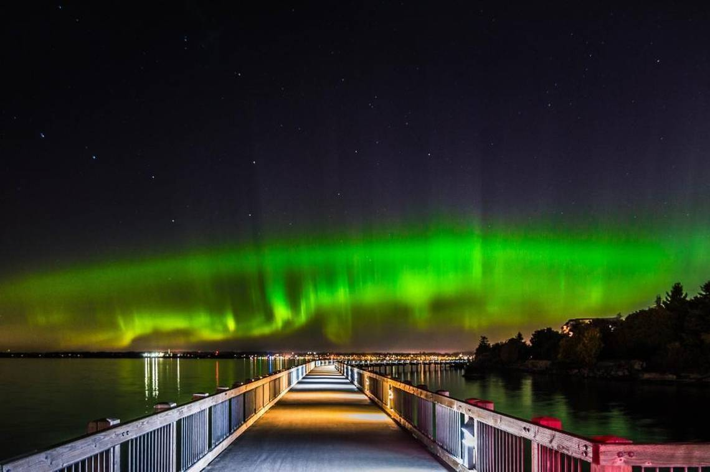
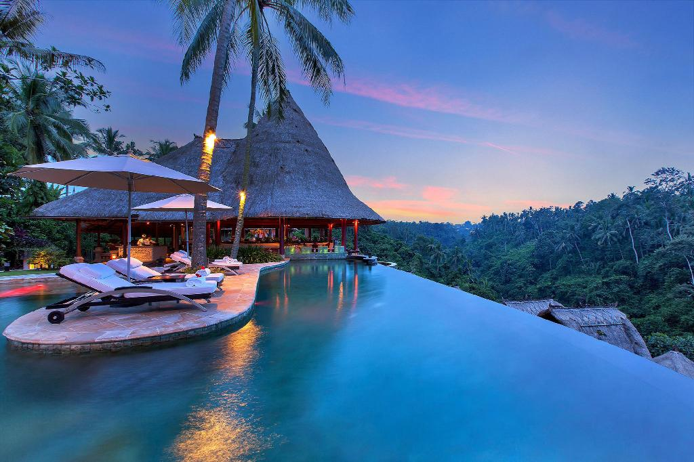
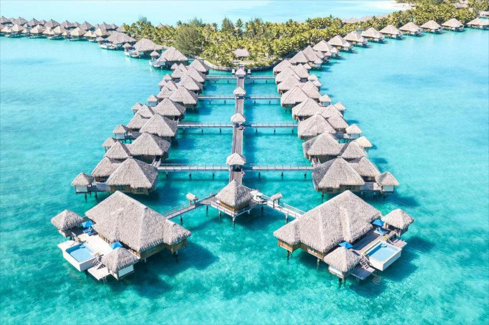
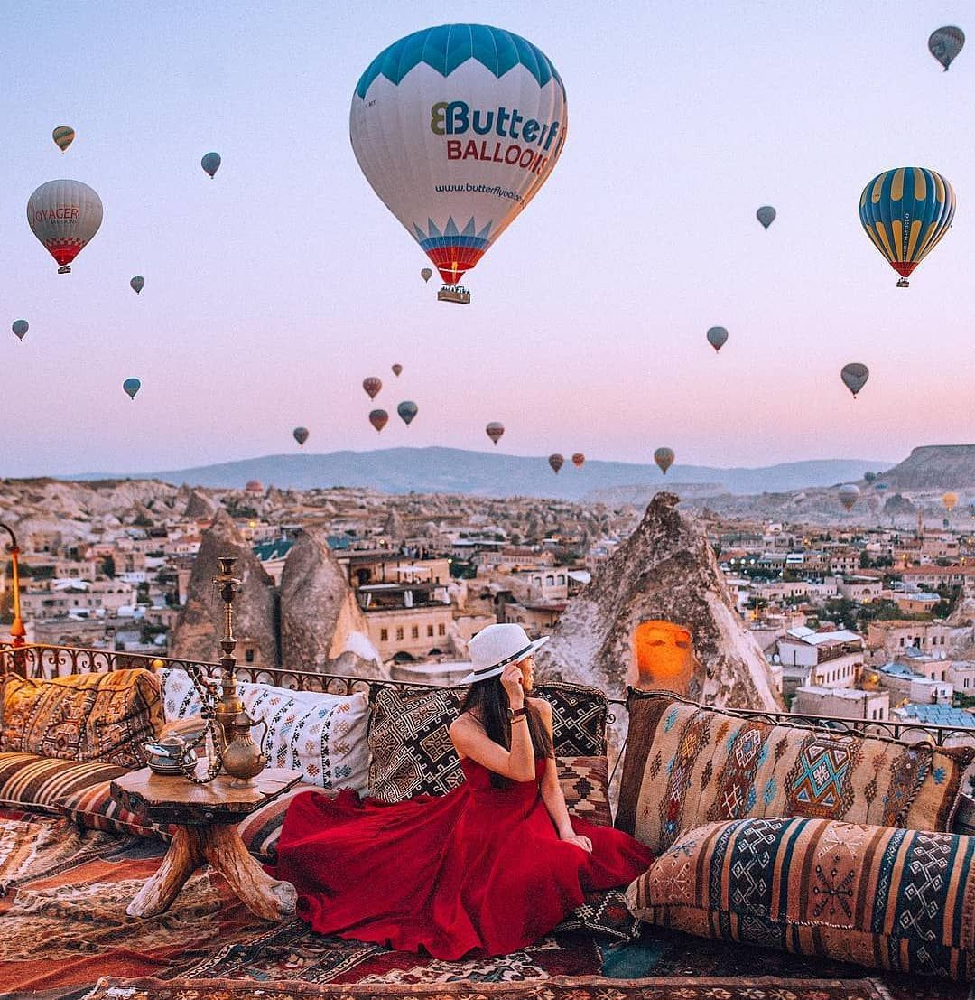
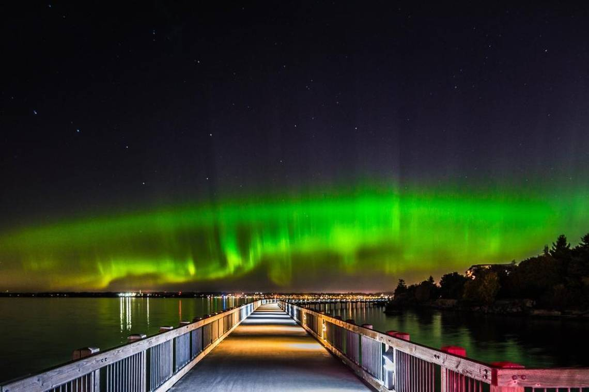
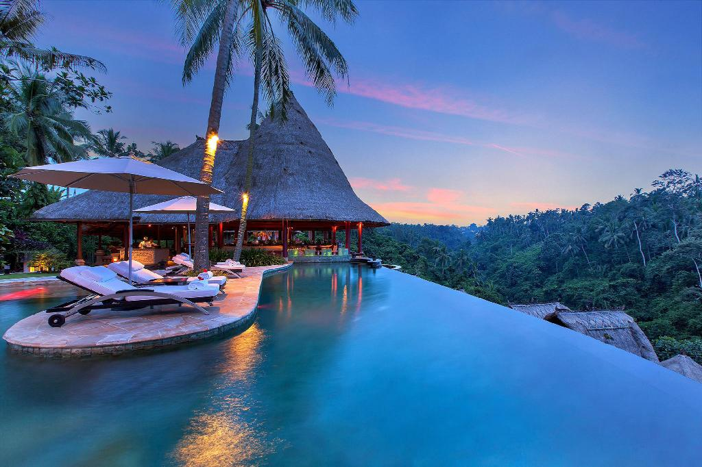
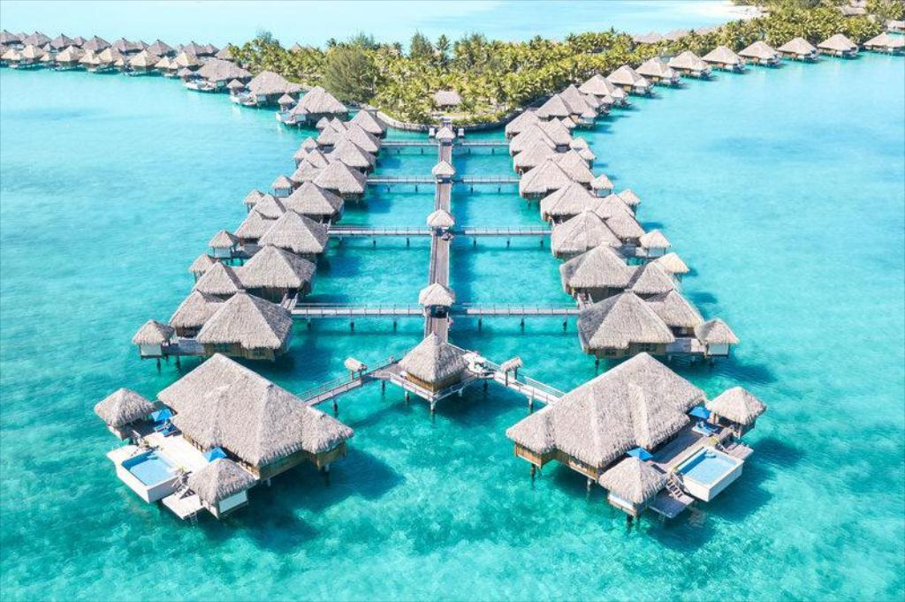
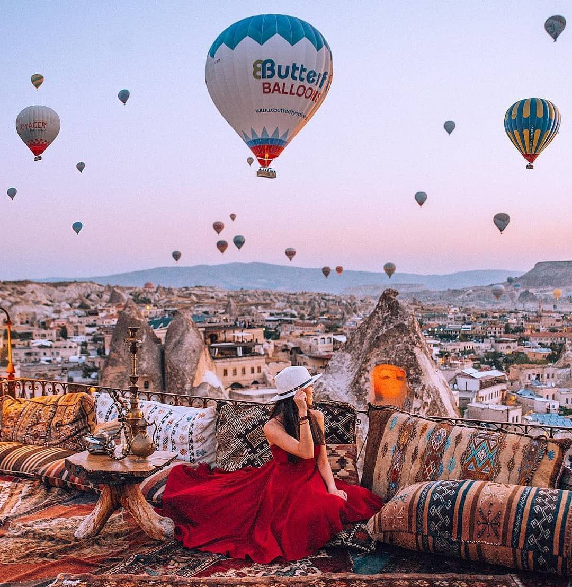

Traveling and Adventure
I have always loved nature and scenery. I like to travel to places that been designed by nature. I always take a trip every summer to a new place and I have been doing this for the past 5 years. I also love thrill and have a thing for adventure sports.
Places to Travel
- Santorini, Greece
- Northern Lights, Alaska
- Bali, Indonesia
- Bora, Maldives
- Cappadocia, Turkey
 







Adventure sports left to do
- Skydiving
- ScubaDiving
- Cage Shark diving
- Running of the bulls